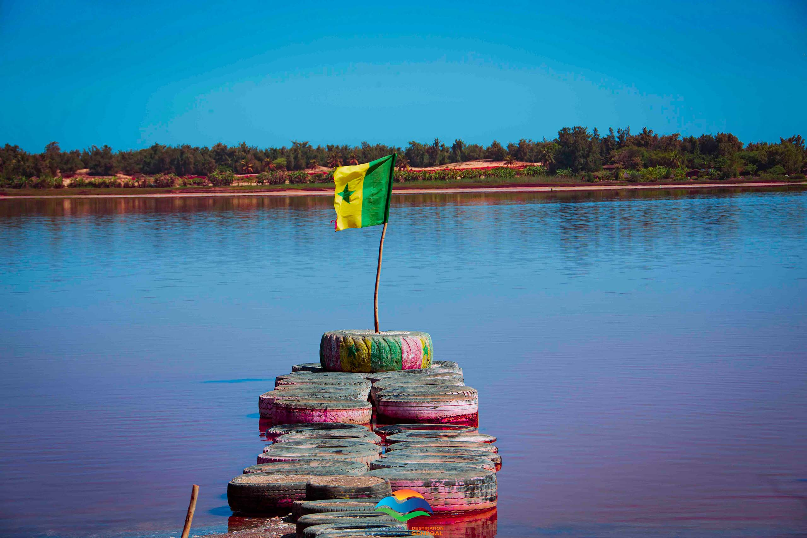
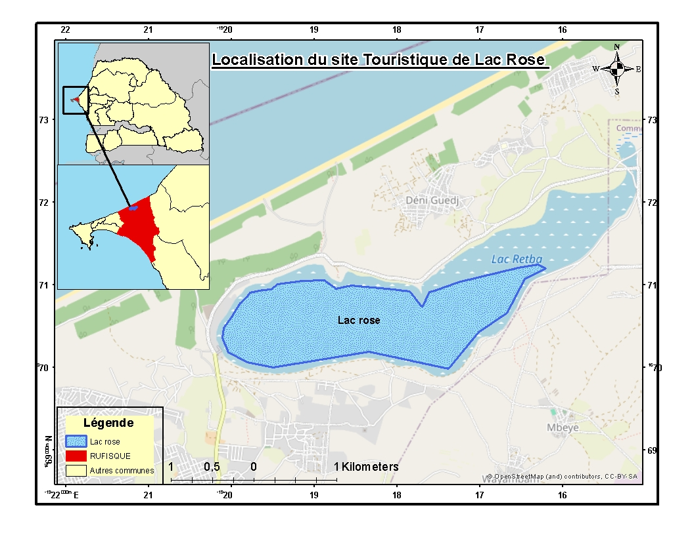
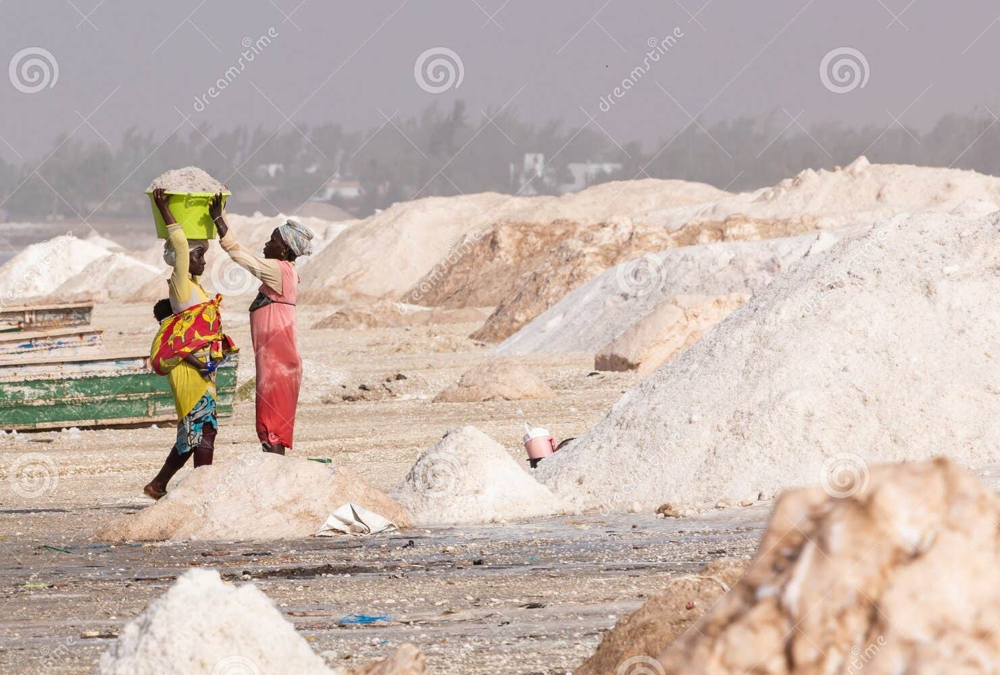
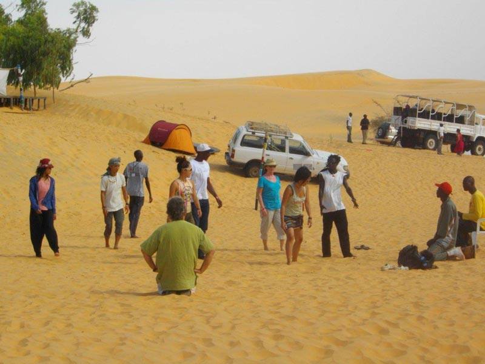
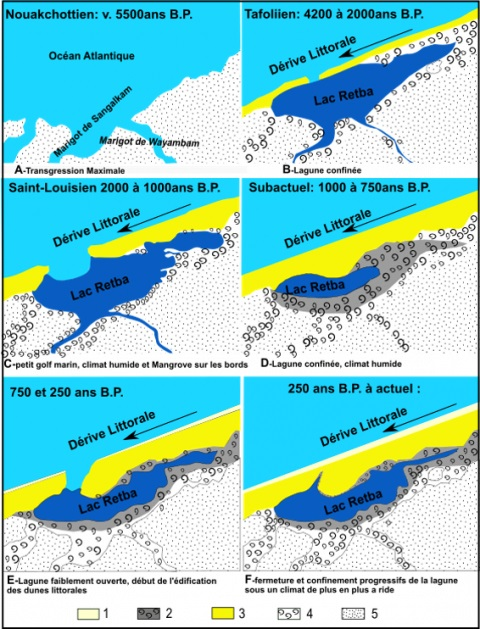

{kind=link}
Lac ROSE, Une Beauté Naturelle
ACTIVITE MENEE AU LAC
L'activité principale du lac est l'exploitation du sel, extrait de ses eaux depuis des années. Cela explique pourquoi le lac acquiert cette couleur si particulière lorsque le soleil atteint le zénith. La quantité de sel y est 10 fois supérieure à celle de la mer ! Le lac Rose du Sénégal est situé à quelques centaines de mètres de l’océan Atlantique, à 35 km au nord-est de Dakar. En vous rendant au Lac, vous pourrez y apercevoir les hommes ramasser le sel dans le lac. Ils doivent s’enduire de beurre de karité pour éviter une agression trop forte du sel sur leur peau. En effet, ils passent beaucoup de temps dans l’eau du lac. Ils sont équipés d’un bout de bois pour casser les blocs de sel pêchés au fond du lac et déposer leur récolte sur leur barque. Les femmes, quant à elles, transportent le sel des barques sur la terre ferme. Elles portent des turbans sur la tête pour y placer les seaux remplis de sel. Juste à côté du Lac Rose se trouve le village de Niaga. C’est un village traditionnel sénégalais, même s’il est plus développé que certains. En effet, ce village a bénéficié du mythique rallye Paris-Dakar et des revenus qu’il a généré. En flânant dans les rues, vous pourrez vous imprégner de la culture locale.
Que faire au Lac Rose et comment s'y rendre Balade en pirogue sur le Lac Une traversée du lac en pirogue traditionnelle est une excellente façon de découvrir les environs et de voir le lac sous un autre angle. Vous pouvez profiter d’une vue panoramique sur le lac et admirer la beauté naturelle des lieux. Vous aurez aussi la chance de voir les ramasseurs de sel de plus près. Aux alentours du Lac Rose se trouvent des dunes et une plage à parte de vue ! C’est une expérience que je vous conseille de faire pour en prendre plein les yeux. Les paysages sont magnifiques. La visite du Lac Rose peut très bien aller d’une demi-journée à 2 jours selon vos envies. L’essentiel peut être fait en une demi-journée. Cependant, si vous souhaitez prendre le temps et apprécier davantage ce paysage magnifique, vous pouvez très bien passer la nuit près du Lac. Comment se rendre Par la route, deux possibilités s’offrent à vous : tournez à droite à hauteur du croisement Keur Massar au km 20, ensuite rouler jusqu’au terminus de l’Autobus pour emprunter la route de « Boune » (en mauvais état), ensuite à gauche ver le village de Niaga. La deuxième solution par le nationale 1 est de passer par la ville de Rufisque, ensuite Sangalkam, puis Bambilor. Compter une petite heure de trajet. Louer une voiture : la location d’une voiture peut être une bonne option puisque cela permet une plus grande liberté. Les routes vers le lac sont relativement bien entretenues et faciles à naviguer. Utiliser les transports en commun : vous pouvez emprunter un taxi collectif ou un bus au départ de Dakar. Réserver une excursion avec un guide francophone : cette option est selon moi la plus économique et qui offre la meilleure expérience. Très souvent, le prix de l’excursion comprend le transport. De plus, un guide qui connaît son pays vous accompagne et vous partage sa passion.
Histoire du Lac
Le lac Retba communiquait jadis avec l’océan par l’intermédiaire d’un chenal colmaté par les dunes. Dans sa partie méridionale (côté lac), cet ancien chenal est occupé par une succession d’étangs permanents (profondeur 1 m), à salinité variable en fonction des saisons, se déversant par un mince filet d’eau dans le lac. Ils reçoivent de l’eau salée en provenance de l’océan, de l’eau douce de la nappe des sables quaternaires et des eaux de pluie vous ne pouvez pas vivre tous les jours, et qui mérite vraiment d’être vécue.Le Lac Rose constitue également un « reposoir » pour de nombreuses espèces d’oiseaux (fig. 5C). Les plus importantes sont le Combattant varié (Philomachus pugnax), le Bécasseau cocorli (Calidris ferruginea), la Sarcelle d’hiver (Anas crecca), le Petit Gravelot (Charadrius dubius), la Glaréole à collier (Glareola pratincola), le Cochevis huppé (Galerida cristata), le Chevalier guignette (Actitis hypoleucos), le Faucon crécerellette (Falco naumanni), le Busard pâle (Circus macrourus). Le pourtour du lac constitue par ailleurs un site de nidification de l’Échasse blanche (Himantopus himantopus) (Baillon, 1985). On y distingue plusieurs types d’écosystèmes (Reynaud et Roger, 1978 ; Rey et al., 2009)Le Lac Rose, géosite menacé de disparition Plusieurs menaces pèsent sur l’environnement du lac Retba initialement relié à l’océan atlantique sous forme de lagune. Depuis sa déconnexion avec l’océan et son isolement, la surface du plan d’eau se rétrécit au fil du temps. Les rythmes d’atterrissement s’accélèrent en réponse à la sécheresse climatique débutée dans les années 1970. A côté de ce forçage climatique, la pression démographique et le poids des activités humaines perturbent le fonctionnement « naturel » de l’espace littoral du lac Retba qui ne possède pas une capacité de charge suffisante pour s’ajuster à la demande. Les changements environnementaux sont alors multiples et rapides. Emergent alors des risques environnementaux mais aussi phytosanitaires pour les populations, agriculteurs et les exploitants de sel. De ce fait, l’avenir de cet espace semble compromis sans une meilleure gestion des activités et des pratiques agricoles, garante de la préservation de ce milieu littoral dont l’importance socio-économique et culturelle est essentielle pour le Sénégal. La croissance incontrôlée, de ces dernières décennies, a abouti à une urbanisation massive de cette zone fragile et exposée : les Niayes. Les amas coquilliers à Senilia senilis, situés sur les rives sud et nord-est, sont exploités d’une façon anarchique et aucune quantification de leur exploitation n’est disponible. Le cordon sableux sur les plages et dunes est quotidiennement pris d’assaut par les « voleurs de sable ». Le maraîchage et l’arboriculture sont très développés dans le périmètre compris entre le lac et les dunes. Ces activités exposent le géosite « Lac Rose » à des menaces qui peuvent impacter sur deux aspects : l’alimentation en eau et sel et le maintien de la dépression.
Chaque année, le lac rétrécit un peu, il a même perdu la moitié de sa surface en seulement 200 ans ! Il est donc temps de le visiter.
Haut de Page